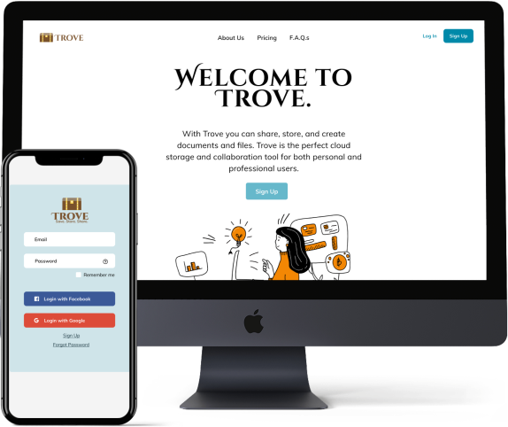
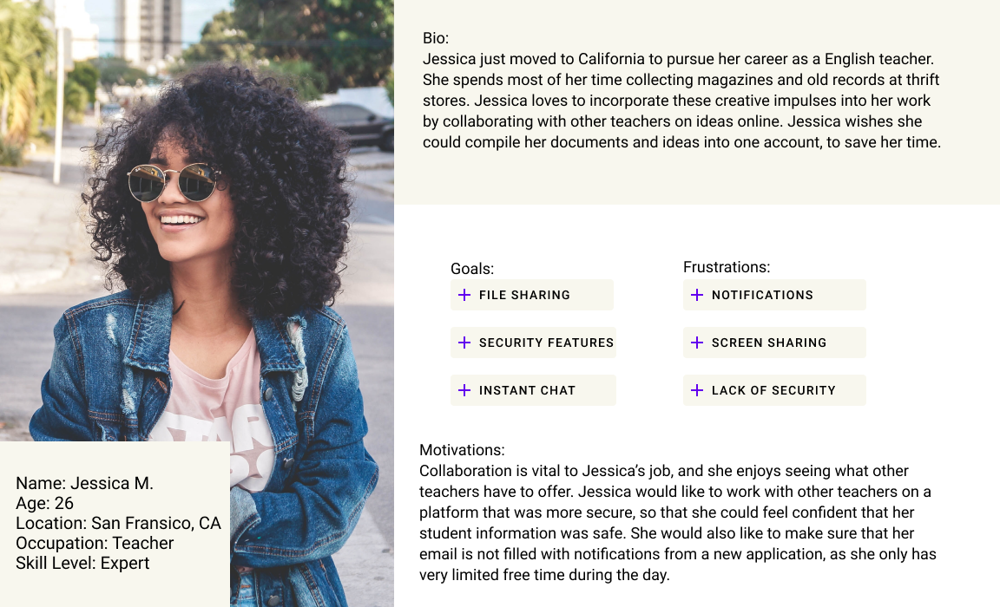
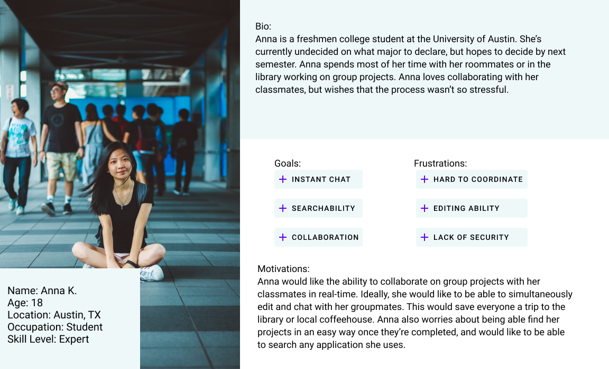
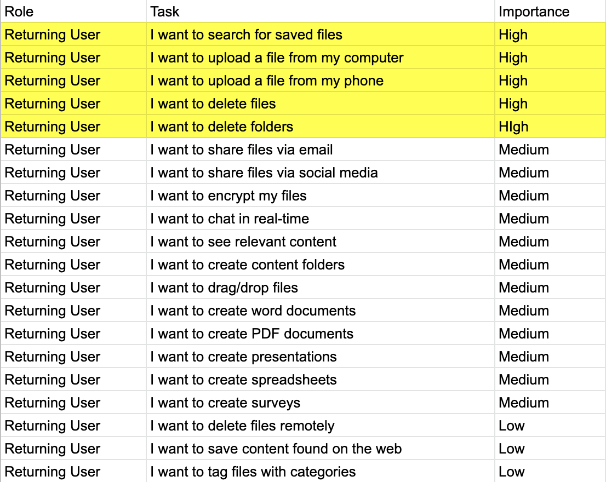
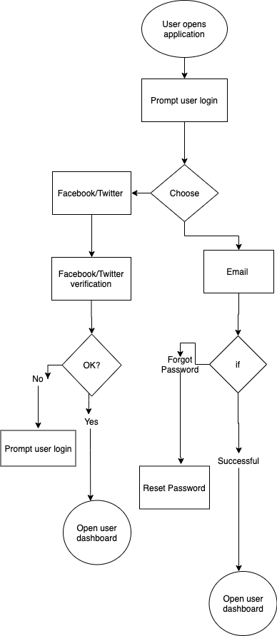
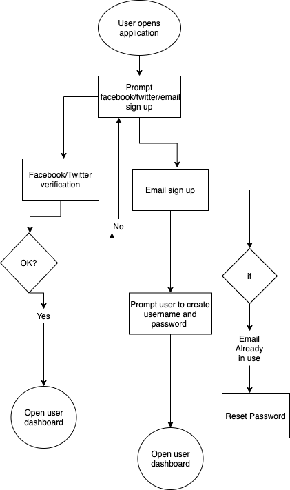
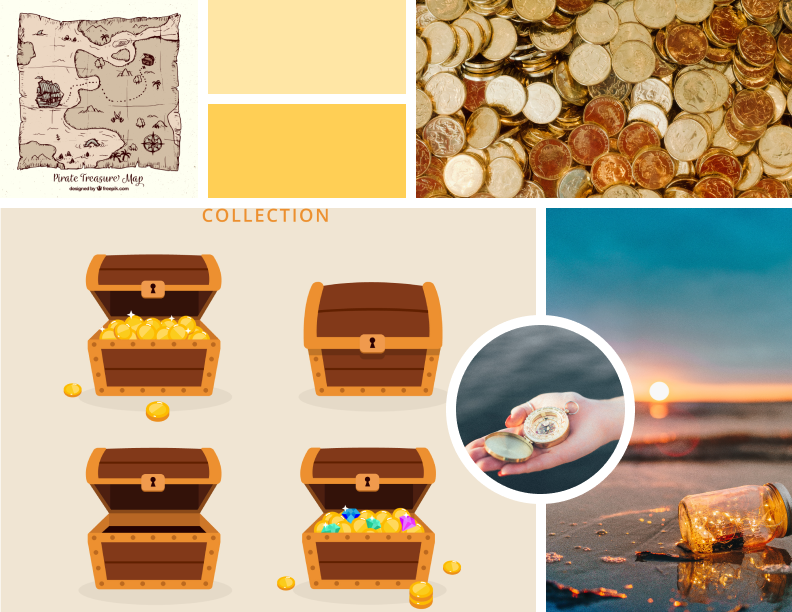
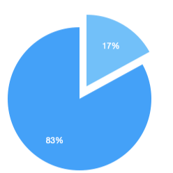

Summary:
In the ever-expanding cloud storage marketplace, something was missing. Users wanted the ability to collaborate with each other in real-time on projects. My goal was to take some of the best aspects of current cloud storage and organization applications and inject them with a sense of social networking.
Presenting Problem:
The client wanted to enter the cloud application market with an application that also provided user collaboration features.
The Solution:

Discovery Phase:
Before beginning the design process, I needed to gather information about how users felt about their current cloud application, the way they use them, and the features they would most like to see in future applications.
Competitive Analysis:
Google has many products to offer its users through its Drive platform. They have built-in templates for surveys, documents, spreadsheets, and presentations. They also provide several tools for users to edit content with.

Dropbox is available on multiple platforms, iOS, Android, and Office 365 applications. The application also has the option of administration control for business users.
Pinterest allows users to “Pin” images or ideas they find on websites to their boards. They also provide users with similar ideas to pins they have already chosen. Pinterest’s platform allows for endless scrolling.

View more
User Personas:
The first user persona represents a user who is interested in using the application for work related activities, for example sharing content and ideas with colleagues
The second user persona represents a user who uses our application for school and personal use. This user is invested in collaborating with classmates, group mates, and friends.
Information Architecture:
After gathering the initial research, I began working on how to structure of the content of the application. I started by creating users stories based off the data from the user survey responses, the competitive analysis and the user personas. I compiled a list of tasks that Trove users would want to complete and rated them from high to low priority.
 View moreUser Flows:
  View more
Wireframes:
Combining information from my competitive analysis and my user surveys, I was able to outline what I would like my application to look like.
 View more
View more
Branding and Identity:
The concept for Trove came from wanting to convey a sense of security and stability to consumers. I started by thinking of the consumer’s content as actual treasure. This helped
create the concept of the treasure chest.
Brand mood: New, bright, creative, clean and crisp.
Once I knew I wanted to go in a treasure chest/nautical theme, I started to gather inspiration from around the web. Colors that are featured in the mood board (brown, orange, gold, blue and teal) were the foundational pieces for the finished app.

Usability Tests:
The first round of usability tests I ran provided valuable feedback about the overall functionality of the website. I conducted this test with three users. Users said they would like to see where/how to add new templates, and if there are any more ways to move files aside from deleting them. Also, a reviewer suggested combining the landing page, pricing into a single page.
Mockups:
After the feedback from the usability tests, I was able to create high fidelity mockups of my final application.
 View more
View more
Usability Tests:
The second round of usability tests provided insight into further improvements I could make to the application. I conducted this test with three users. From the feedback that I received, it seems like the idea and foundation behind the site have come together, but the fonts and icons used could be more consistent and user-friendly.
Preference Tests:
I conducted a preference test for three different elements in my design. The first element was the background color for the log-in screen.The feedback that I recieved was that users preferred a neutral background to a white background. Users also preferred a Cinzel Decorative/Muli font pairing. Finally, users preferred wider width CTA buttons on the login and sign up pages.
83% of user preferred a the log-in screen with a neutral background compared to a log-in screen with a colored background.
Final Design:
 View prototype
View prototype
Conclusion:
Trove is the next step in content storage and organization. Trove presents an opportunity for both casual consumers and businesses to benefit from user-friendly organization, content creation and collaboration tools.